在同學間的評價也不錯，
因此今天便去了它在新竹巨城百貨的分店用午餐。
店面的裝潢蠻簡單大方的，用餐環境很舒適。
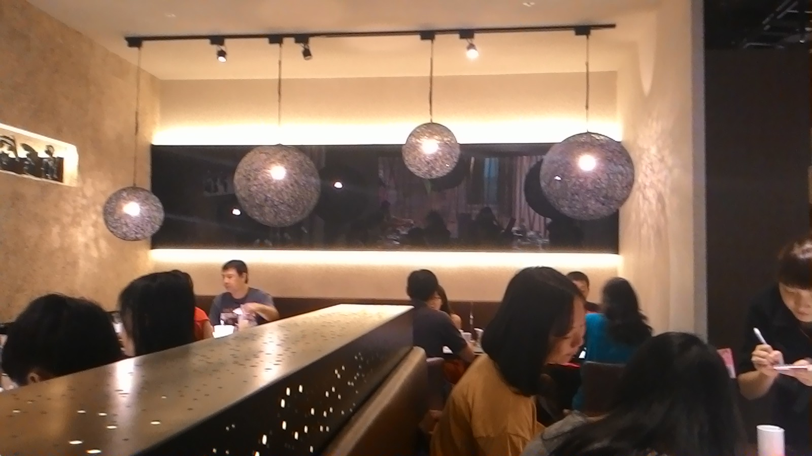
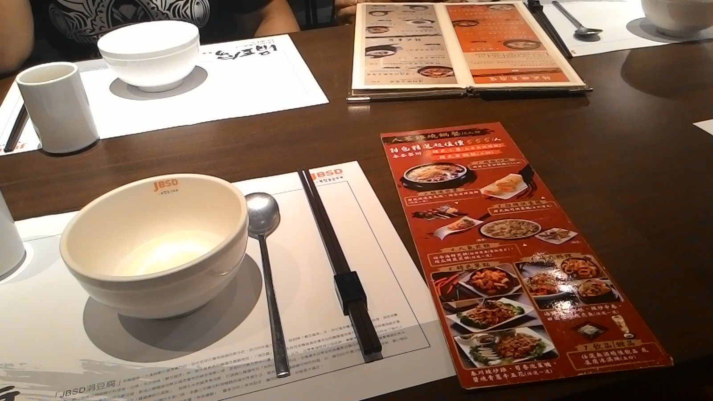
入座時先上的 麥仔茶也十分清淡爽口。
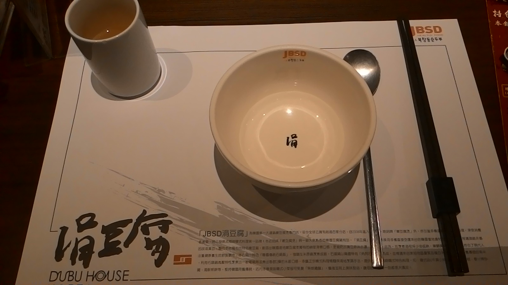
我們4個人點了他的 3人組合套餐。
(465*3元，其實非常夠吃)

我還另外點了一杯 石榴氣泡醋飲，
冰冰涼涼、酸酸甜甜的，
搭配氣泡啵啵啵的刺激口感，
喝起來很清爽。
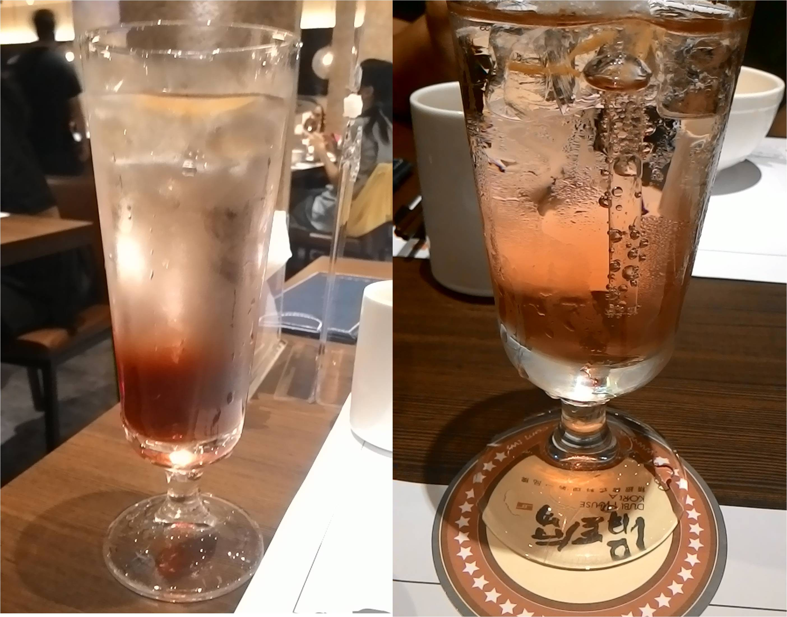
上菜前會先有一些小菜，
這些小菜是無限提供的，
有點石鍋飯的話拿來拌飯也很合適。
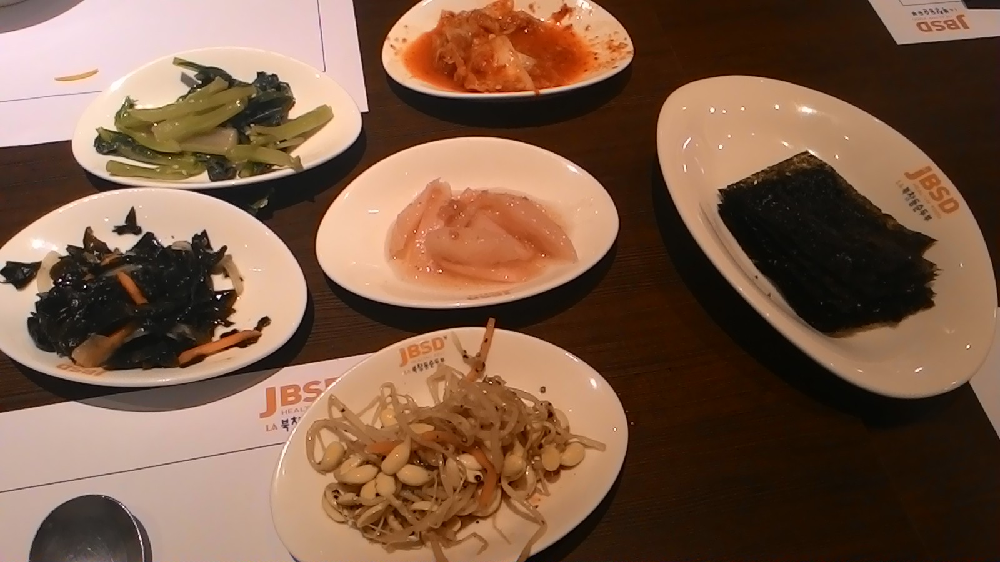
這是前菜的 黃金嫩豆腐，
我每次吃這類的食物都會被燙到...
但還是蠻好吃的。
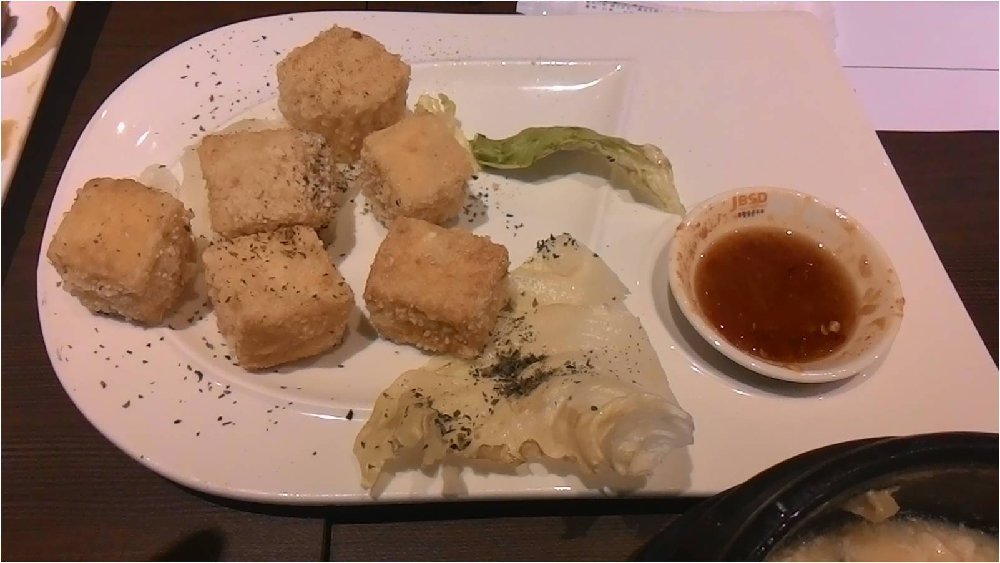
接下來是他們的招牌 韓式豆腐煲，
我們點的是韓式餃子豆腐煲，
但坦白說我覺得這道招牌最普通，
湯很像一般鍋燒麵的湯，
韓式餃子也很像迷你版的韭菜水餃，
個人覺得沒有一般招牌菜驚為天人的感覺。
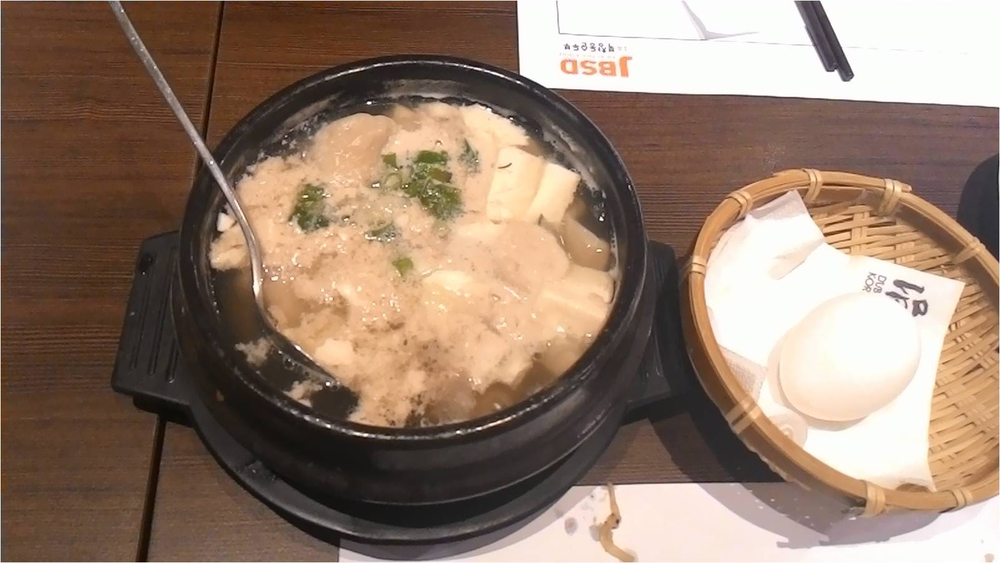
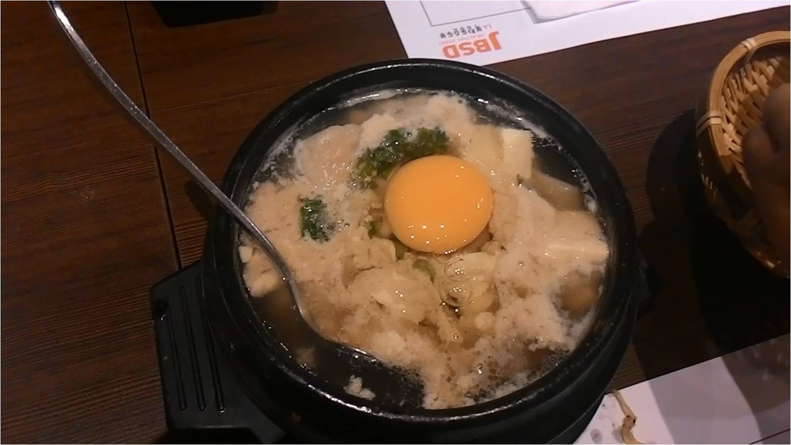
這是搭配豆腐煲的 石鍋飯，
裡面是沒有任何配料的 紫米飯，
可以加小菜變 石鍋拌飯，
也可以把麥仔茶倒進去變 茶泡飯，
加麥仔茶的話鍋巴也比較不會黏鍋。
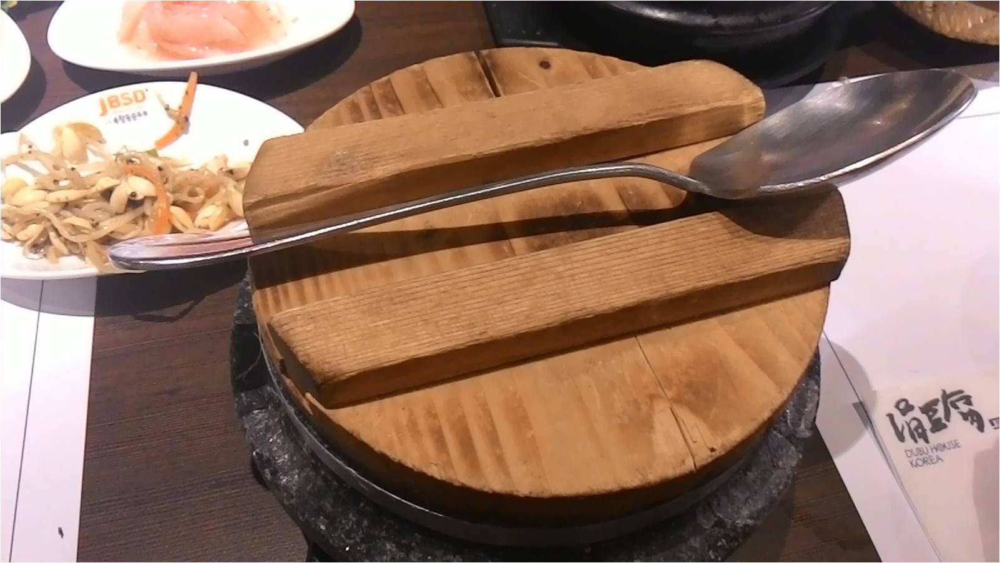
這是特色料理 醬燒青蔥牛五花，
我個人覺得是今天最好吃的一道菜。
高麗菜搭配青蔥、醬燒牛五花、還有很Q彈的年糕&特調醬，
非常好吃。
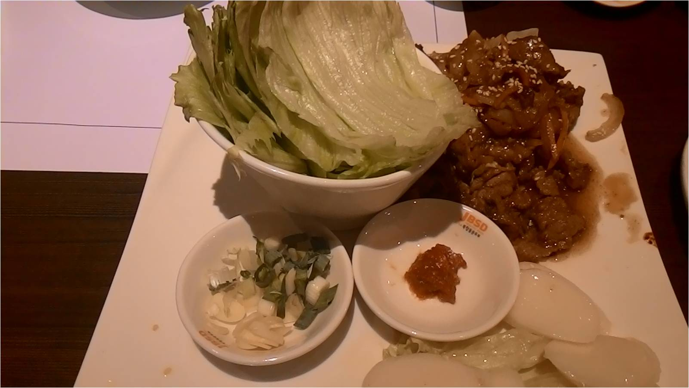
綜合海鮮煎餅忘記拍照了，
有薄片和厚片可以選擇，
我們選了薄片的，
個人覺得很普通，
很像我媽媽做得煎餅...
最後一道主菜是 韓式雙味起士烘蛋捲，
起士放很多不錯吃，
但因為前面已經吃很飽了，
起士味道又重，
蠻容易膩的。
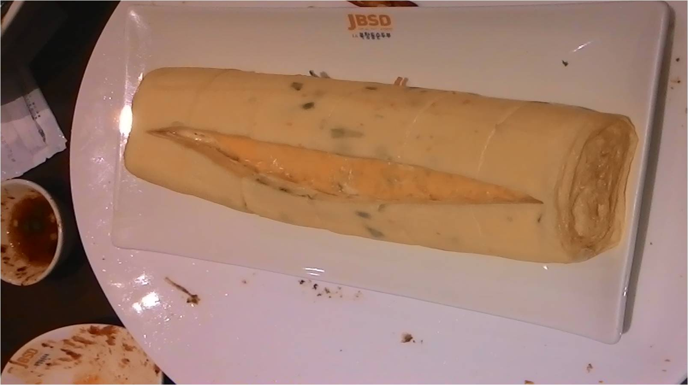
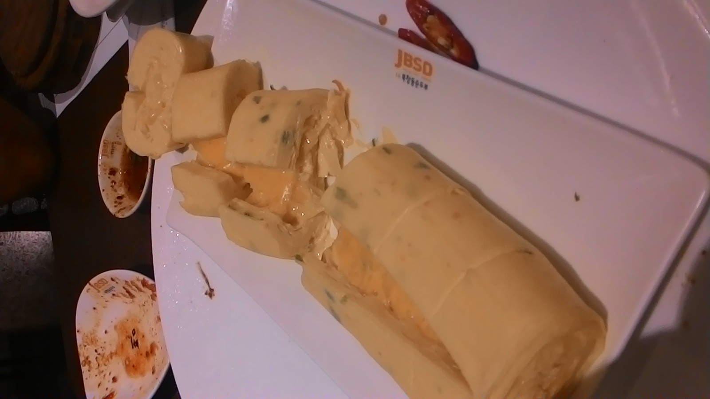
最後是甜點 黑糖柚香豆花，
袖子和黑糖很配，
搭上沒什麼味道的豆花剛剛好部會太膩，
覺得是蠻有特色的甜品。
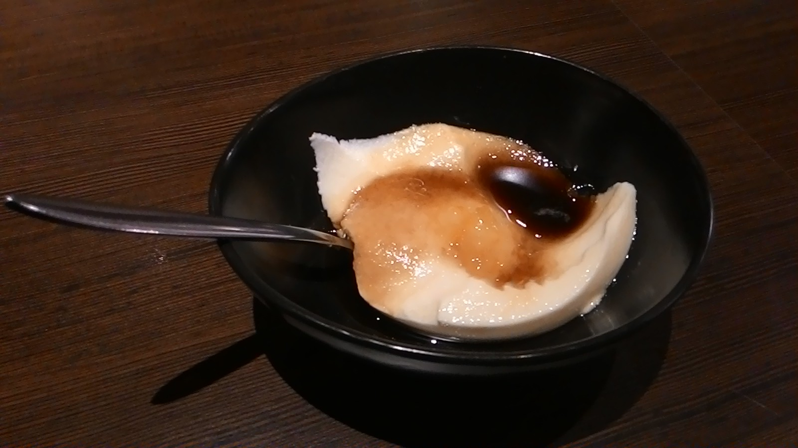
小小結論一下，
涓豆腐雖然整體來說不錯吃，
但並沒有會讓我流連忘返的程度，
價位又偏高(已經可以去吃到飽餐廳了)，
所以我覺得CP值偏低。
但對餐廳的看法還是見仁見智，
也有蠻多人對涓豆腐的評價很高，
所以不知道要吃甚麼的時候，
(還有手頭不是太緊的時候)
還是可以嘗試看看喔！